<title>Readwise for Even G2</title>
<meta name="claude:viewport-fit-sides" content="cover">
<link rel="preconnect" href="https://fonts.googleapis.com">
<link rel="stylesheet" href="https://fonts.googleapis.com/css2?family=Newsreader:opsz,wght@6..72,400;6..72,600&family=Inter:wght@400;500;600&family=JetBrains+Mono:wght@400&display=swap">
<style>
/* Layout: a reading column with the glasses frames as dark objects set into it; the highlighter is the one accent. */
:root {
  --paper: #f4f5f3;
  --ink: #161a17;
  --muted: #5d665f;
  --rule: #dde1dc;
  --mark: #f6f27a;
  --mark-ink: #161a17;
  --panel: #0c0f0d;
  --display: 'Newsreader', Georgia, 'Times New Roman', serif;
  --body: 'Inter', system-ui, -apple-system, 'Segoe UI', sans-serif;
  --mono: 'JetBrains Mono', ui-monospace, 'SF Mono', Menlo, monospace;
}
@media (prefers-color-scheme: dark) {
  :root:not([data-theme="light"]) {
    --paper: #121513; --ink: #e7ebe8; --muted: #9aa49c; --rule: #2a302c;
    --mark: #e8e36a; --mark-ink: #121513; --panel: #070908; color-scheme: dark;
  }
}
:root[data-theme="dark"] {
  --paper: #121513; --ink: #e7ebe8; --muted: #9aa49c; --rule: #2a302c;
  --mark: #e8e36a; --mark-ink: #121513; --panel: #070908; color-scheme: dark;
}
body {
  background: var(--paper); color: var(--ink); font: 400 17px/1.6 var(--body);
  padding-left: max(16px, env(safe-area-inset-left, 0px));
  padding-right: max(16px, env(safe-area-inset-right, 0px));
}
main { max-width: 1080px; margin: 0 auto; padding-block: 56px 72px; display: grid; gap: 72px; }
.col { max-width: 680px; }
.eyebrow { font: 400 13px/1.4 var(--mono); letter-spacing: 0.06em; text-transform: uppercase; color: var(--muted); }
h1, h2 { font-family: var(--display); font-weight: 600; text-wrap: balance; margin: 0; }
h1 { font-size: clamp(40px, 7vw, 68px); line-height: 1.04; letter-spacing: -0.01em; margin-top: 12px; }
h2 { font-size: clamp(28px, 4vw, 38px); line-height: 1.15; }
p { margin: 0; }
.lede { font-size: 20px; color: var(--ink); margin-top: 20px; }
mark { background: var(--mark); color: var(--mark-ink); padding: 0 0.12em; border-radius: 2px; }
.hero { display: grid; gap: 32px; }
figure { margin: 0; }
img { display: block; width: 100%; height: auto; border-radius: 18px; }
.lens { background: var(--panel); border-radius: 22px; overflow: hidden; }
.section { display: grid; gap: 24px; }
.frames { display: grid; grid-template-columns: repeat(auto-fill, minmax(min(100%, 320px), 1fr)); gap: 20px; }
.frames img { border-radius: 14px; }
.phones { display: grid; grid-template-columns: repeat(auto-fit, minmax(min(100%, 240px), 1fr)); gap: 20px; align-items: start; }
.facts { display: grid; grid-template-columns: repeat(auto-fit, minmax(min(100%, 280px), 1fr)); gap: 0 40px; border-top: 1px solid var(--rule); }
.fact { padding-block: 18px; border-bottom: 1px solid var(--rule); min-width: 0; }
.fact b { display: block; font-weight: 600; margin-bottom: 4px; }
.fact span { color: var(--muted); }
code { font: 400 0.88em var(--mono); }
footer { border-top: 1px solid var(--rule); padding-top: 20px; color: var(--muted); font-size: 14px; display: grid; gap: 6px; }
</style>

<main>
  <header class="hero">
    <div class="col">
      <div class="eyebrow">Even Realities G2 · for Readwise Reader</div>
      <h1>Readwise, on your glasses</h1>
      <p class="lede">Your Reader library on your glasses. See what arrived, <mark>decide from a preview</mark>, ask for a summary only when you want one, read the whole piece, and archive with one hold.</p>
    </div>
    <figure class="lens">
      
    </figure>
  </header>

  <section class="section">
    <div class="col">
      <h2>One article, start to finish</h2>
      <p style="margin-top:12px">Each frame is the real glasses display, captured in the Even Hub simulator. The articles are demo content written for these screenshots.</p>
    </div>
    <div class="frames">
      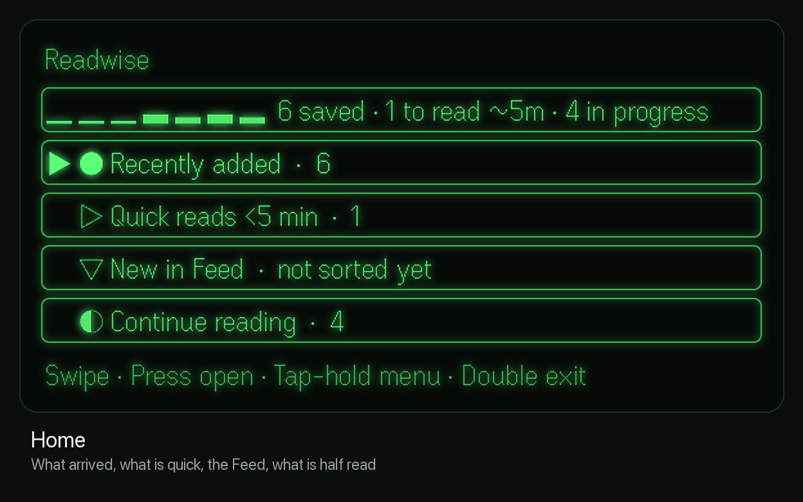
      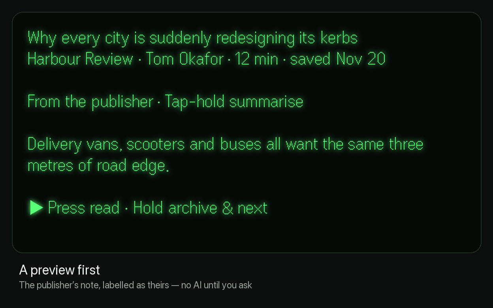
      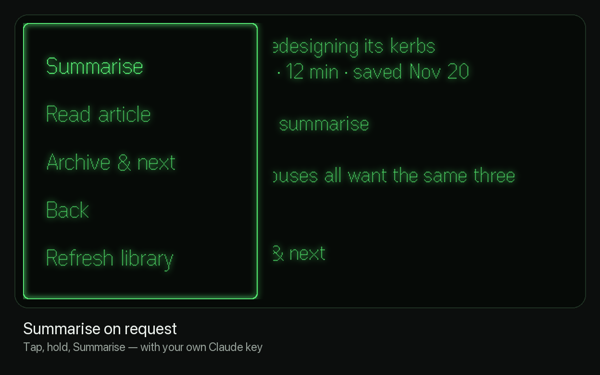
      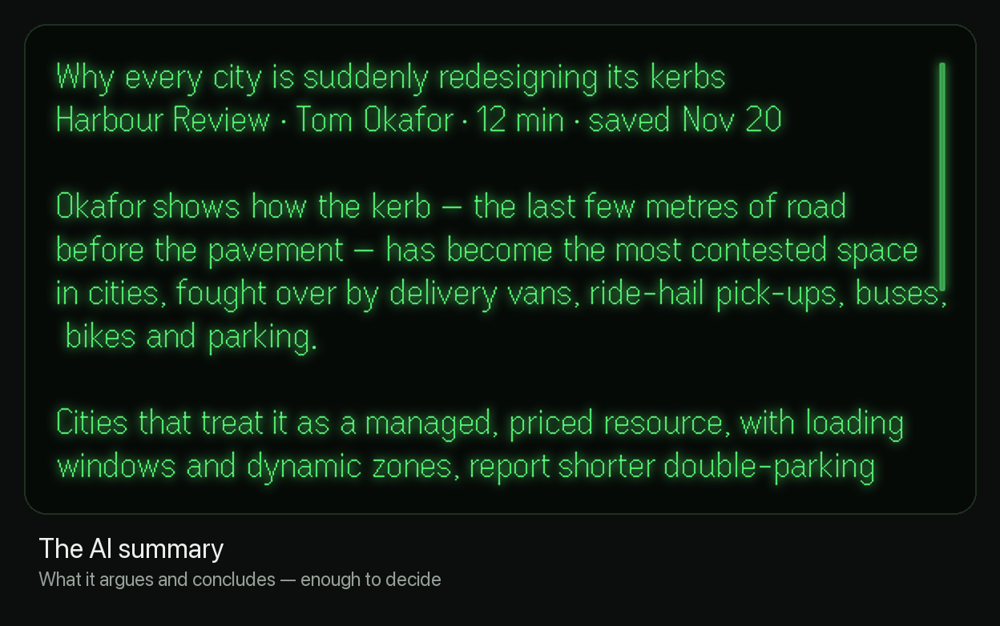
      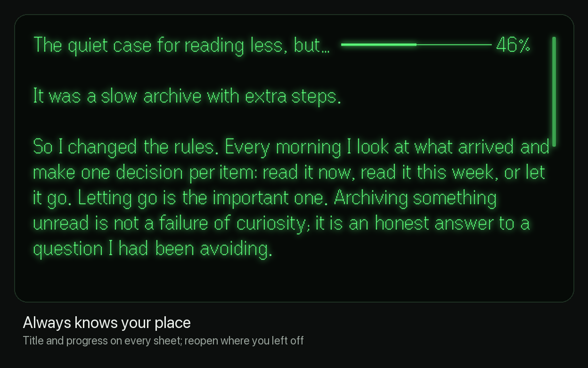
      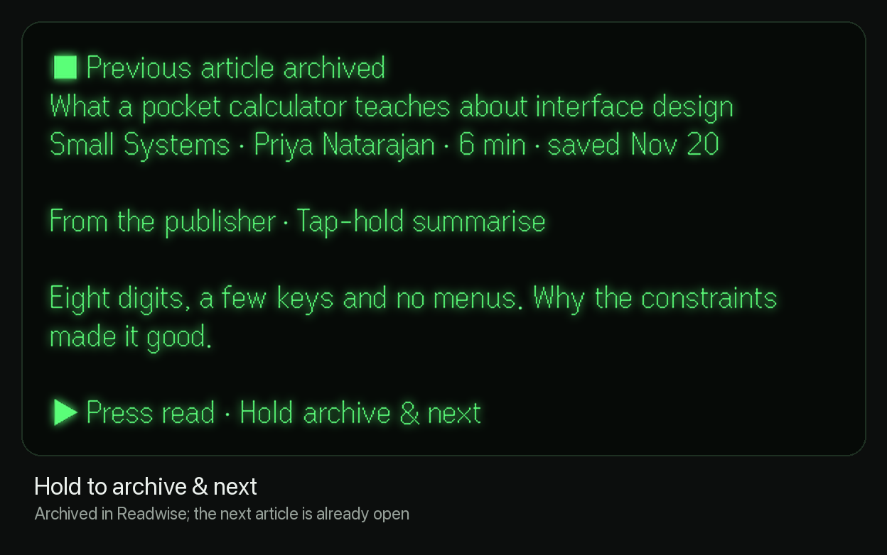
      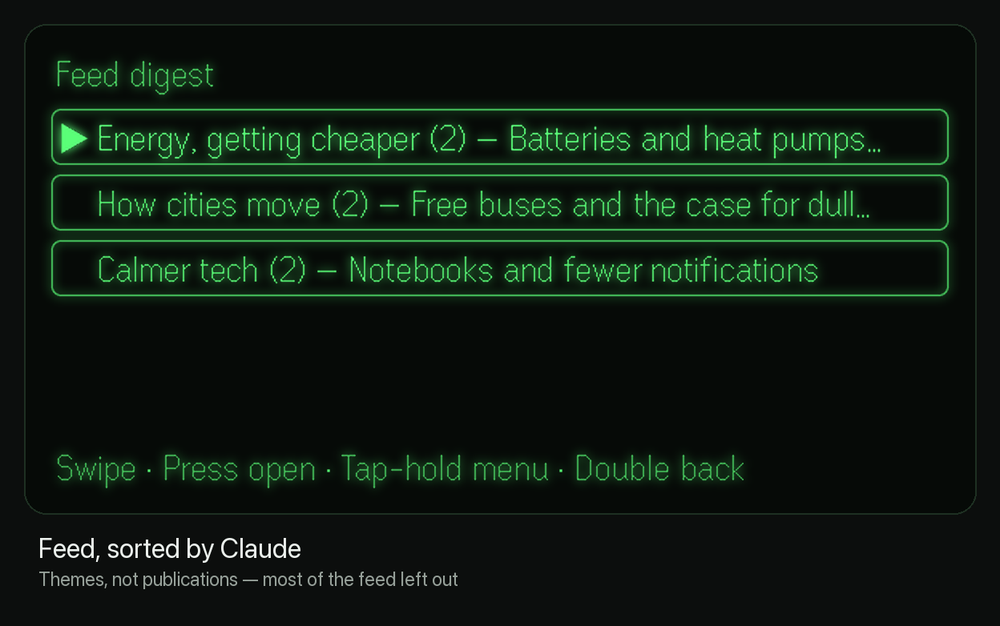
      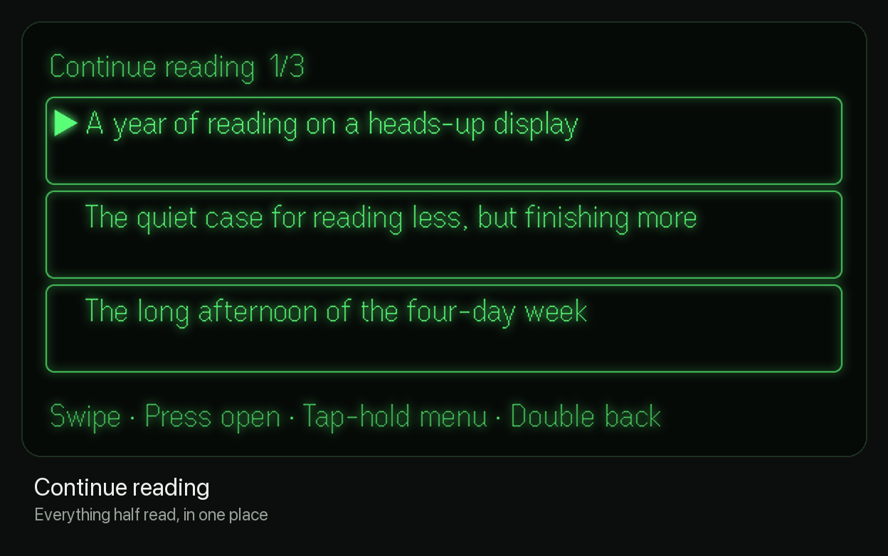
    </div>
  </section>

  <section class="section">
    <div class="col">
      <h2>The phone companion</h2>
      <p style="margin-top:12px">The same library in the Even Hub app on the phone: search and filter, read the full text, summarise, archive. Settings holds the Readwise token and the optional Claude key.</p>
    </div>
    <div class="phones">
      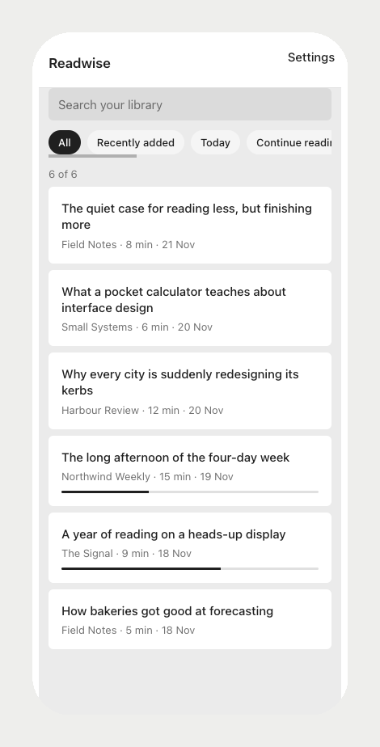
      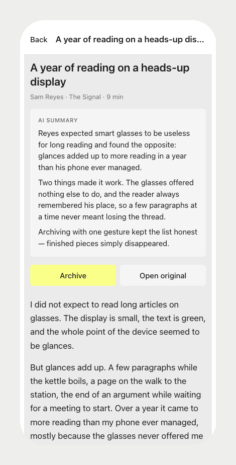
      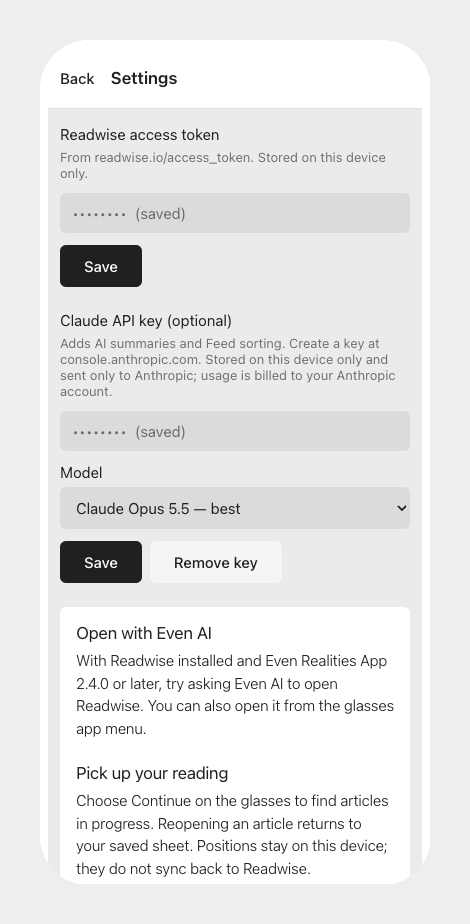
    </div>
  </section>

  <section class="section">
    <div class="col"><h2>How it treats your library</h2></div>
    <div class="facts">
      <div class="fact"><b>Your token stays on the device</b><span>The Reader API is called directly with your own access token. There is no server in between.</span></div>
      <div class="fact"><b>Light on the API</b><span>The library is fetched once and cached for 15 minutes. Nothing polls; the only write is moving an article to Archive.</span></div>
      <div class="fact"><b>AI only when asked</b><span>Opening an article costs no AI. A summary is requested from the menu, written by Claude with your own key, and kept so it is paid for once.</span></div>
      <div class="fact"><b>Honest labels</b><span>The <code>summary</code> field is the publisher's note, so it is shown as “From the publisher”, never as an AI summary.</span></div>
      <div class="fact"><b>Picks up where you left off</b><span>Reading positions are saved on the device as you turn each sheet, and Continue reading collects what is half done.</span></div>
      <div class="fact"><b>Built for a glance</b><span>Every screen fits the G2’s 576 × 288 display, measured with the firmware’s own font so nothing is cut off.</span></div>
    </div>
  </section>

  <footer>
    <p>An independent app by Anton Morrison for Even Realities G2. Not made by or affiliated with Readwise.</p>
    <p>Screens captured 21 November 2026 from a pre-release build. The library shown is invented demo content.</p>
  </footer>
</main>
